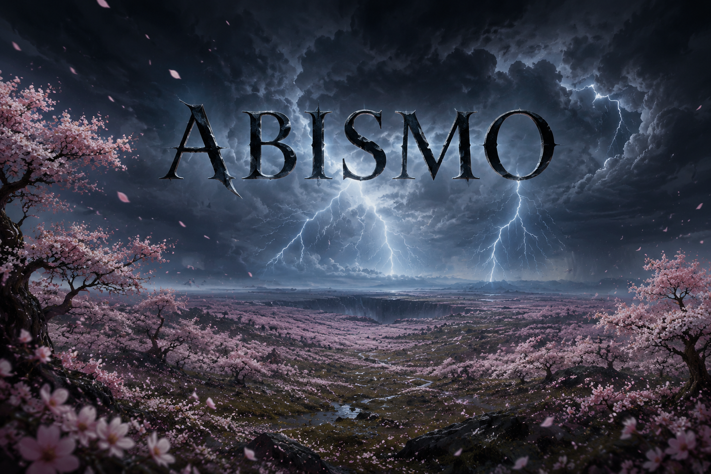
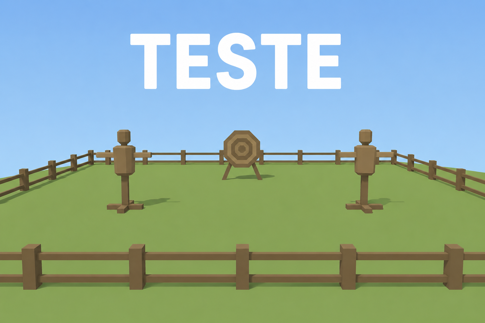

Campanha principal
Abismo
A campanha central, onde o céu se rompe e os destinos começam a afundar.
Selecionar campanhaAbismo · Mestre
Bem-vindo, . Escolha o mundo que deseja conduzir.

A campanha central, onde o céu se rompe e os destinos começam a afundar.
Selecionar campanha
Experimente fichas, regras, combates e habilidades sem alterar a aventura principal.
Selecionar campanha